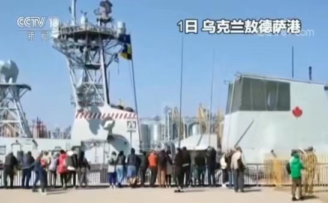
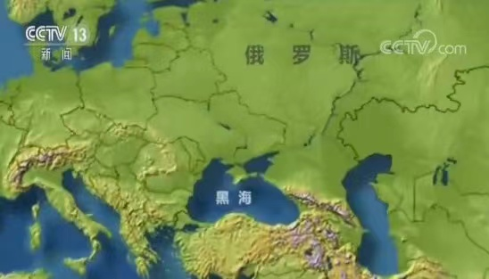
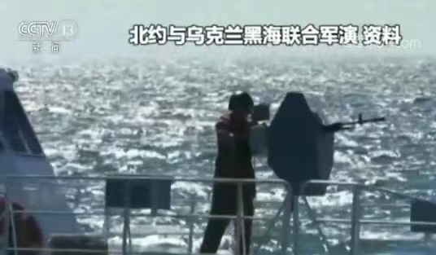

俄乌冲突恐再升温 多艘北约军舰驶入黑海
央视网消息：自去年11月25号俄罗斯与乌克兰爆发“刻赤海峡冲突”以来，黑海和亚速海地区的安全局势再度成为焦点。1号，多艘北约军舰分别进入乌克兰的黑海港口敖德萨和格鲁吉亚的黑海港口波季。
分别停靠乌克兰 格鲁吉亚港口

1号，北约“第二海上常备部队”的一艘加拿大护卫舰和一艘西班牙护卫舰驶入乌克兰敖德萨港停泊。
同一天，同样服役于北约“第二海上常备部队”四艘军舰进入格鲁吉亚波季港，开始对格鲁吉亚进行访问——这四艘军舰分别来自荷兰、土耳其、保加利亚和罗马尼亚。

综合乌克兰和格鲁吉亚官方发布的消息来看，这几艘北约军舰应该都是上个月下旬进入黑海海域的，计划在黑海停留三周，将分别与乌克兰和格鲁吉亚的海军、海岸警卫队进行一系列联合海上演习，以提高双方海上军事行动的协同能力。

而依据1936年部分西方国家与苏联签订的《蒙特勒公约》，非黑海沿岸国家的军舰在黑海的停留时间不能超过21天。
俄舰在黑海跟踪监视北约军舰
俄罗斯国防部上个月29号曾发布消息说，俄罗斯黑海舰队的两艘军舰当天跟踪了在黑海水域航行的部分北约军舰。
俄指责北约扩大黑海地区军事存在
而上个月19号，俄罗斯外交部还曾发表特别声明，指责北约扩大在黑海地区的军事存在。
声明说，据俄方统计，去年，北约军舰在黑海的停留时间“显著增加”，总停留时间从2017年的80天增加到了120天；而且，北约还在东欧地区加强部署，改造更新军用设施——俄罗斯外交部指出，北约的这些行为正在使黑海地区军事化。